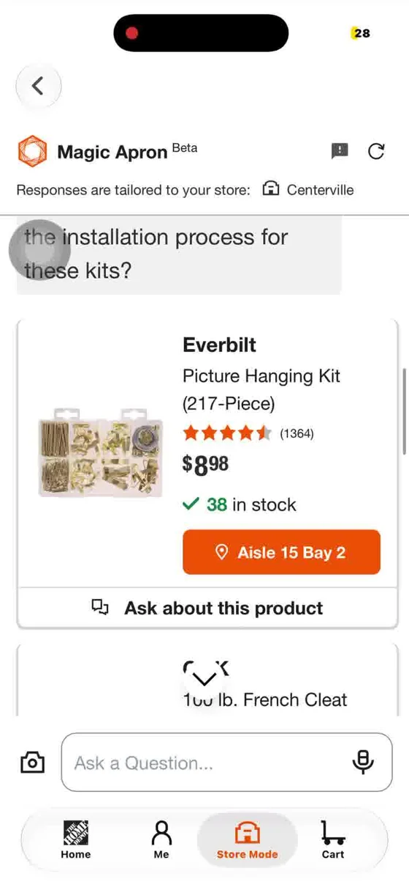
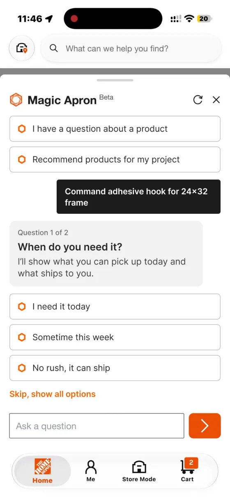
ConceptQuick concept, retail AI assistant · 5 min read
Ask the right question, finish the task
I watched a first-time DIYer ask The Home Depot's AI assistant, Magic Apron, how to hang a photo frame. In Store Mode it showed only hanging kits, so they had to ask again for adhesive strips. And when the item was not on the shelf, reporting it ended with "Thanks for letting us know" and no next step. My redesign asks the 2 questions that matter as taps, and turns an empty shelf into a way to finish the task.
ConceptImpact is a hypothesis to test, not a result.
A self-initiated concept. Not affiliated with or endorsed by The Home Depot. The before screens come from my own recordings of the public app.
Pain point 1: the user had to ask twice
I interviewed a first-time DIYer while they used the app, and recorded the screen. They asked the same question on the Home tab and in Store Mode: "I have a 24×28 photo frame and need to hang it on a wall. What products should I buy?"
- Home tab: a hanging kit, or adhesive strips for no holes.
- Store Mode: hanging kits only. Strips appeared only after they typed "Adhesive."
- Magic Apron did ask about weight and wall type, but at the end of a long paragraph, so they read past it.
Insight: turn the 1 or 2 questions that change the answer into options people can tap.
Screen recording, no sound. On the Home tab, the participant asks how to hang a 24 by 28 photo frame. Magic Apron answers with a long paragraph that suggests a hanging kit or adhesive strips, and asks its questions at the end.
Screen recording, no sound. In Store Mode, the same question returns only hanging kits and hooks. The participant scrolls, then types Adhesive, and only then do adhesive strips appear.
Pain point 2: an empty shelf ends in "Thanks"
The map showed the strips at Aisle 15, Bay 10. They weren't there. Reporting it showed "Thanks for letting us know!" and nothing else: no similar item, no other store, no delivery.
Why it matters: the store gets a useful signal, but the shopper still has no product.
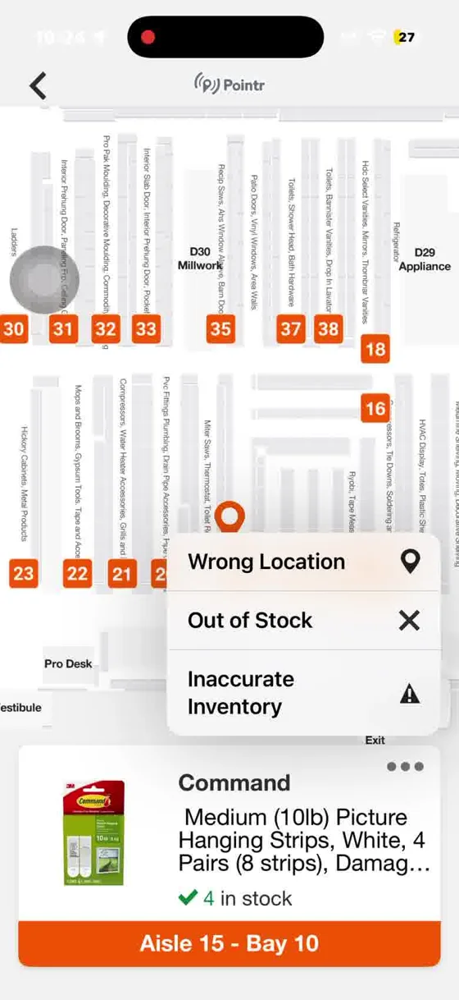
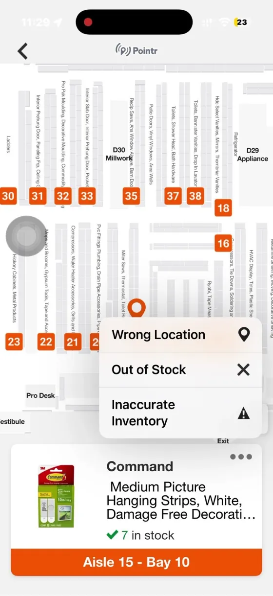
Two problems, two questions to answer
Problem 1. First-time DIYers have to ask again, because the questions are buried in text and Store Mode narrows results without asking.
How might we let the AI ask the 1 or 2 questions that matter, as quick taps, before it picks products?
Problem 2. Shoppers can report an empty shelf, but the app ends at "Thanks for letting us know."
How might we turn a report into another way to get the item today?
Six small changes on the real screens
I wireframed the whole journey in grayscale first. It changed too much of the app, so I kept the ideas and moved them onto the real screens. Each pair shows the app today next to my redesign.
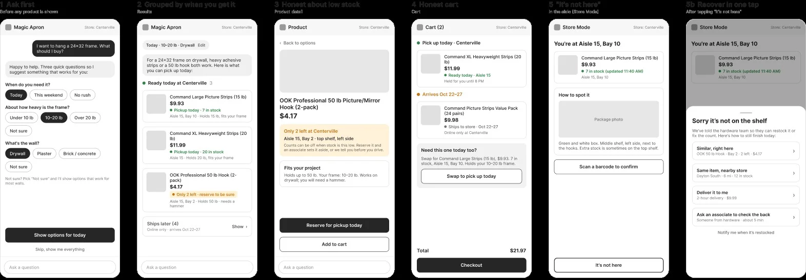
Before: The app today After: My redesign Change 1Ask the most important question first
Before showing any product, Magic Apron asks how you want to hang it. In my interview, this one question would have caught "adhesive."
UX principle
- Error prevention. The wrong product is never shown.
Before: The app today 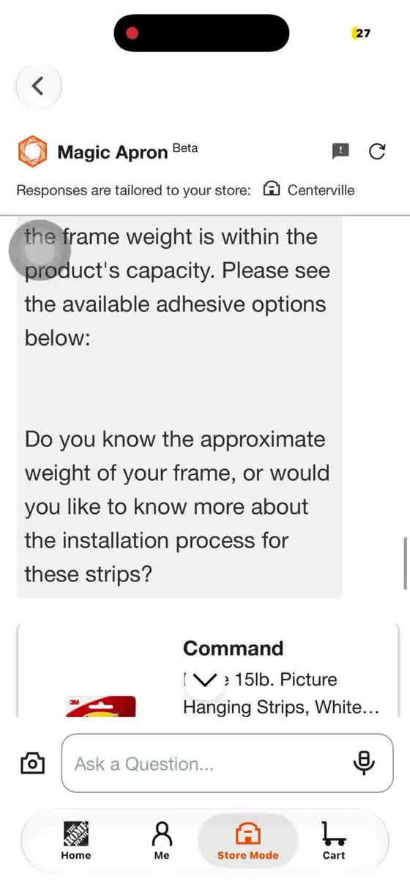
After: My redesign 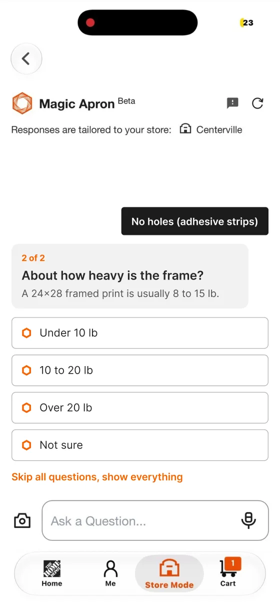
Change 2Questions as taps
Questions move out of the paragraph into their own card, 1 of 2 then 2 of 2, with a quiet "Skip questions" at the bottom.
UX principle
- Recognition over recall. Tap an answer instead of typing one.
Before: The app today 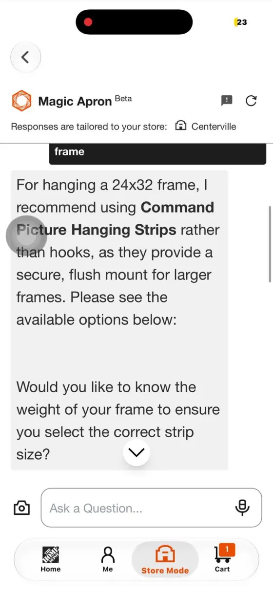
After: My redesign 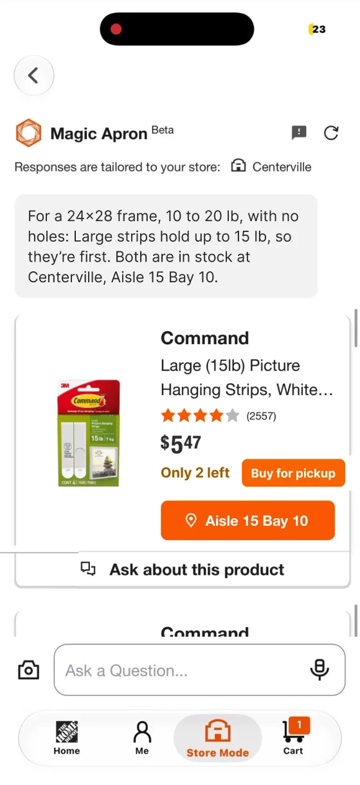
Change 3The right items, with the aisle
Results repeat the shopper's own answers, no holes and 10 to 20 lb, with the aisle and bay.
UX principle
- Match the real world. Results use the user's words.
Before: The app today 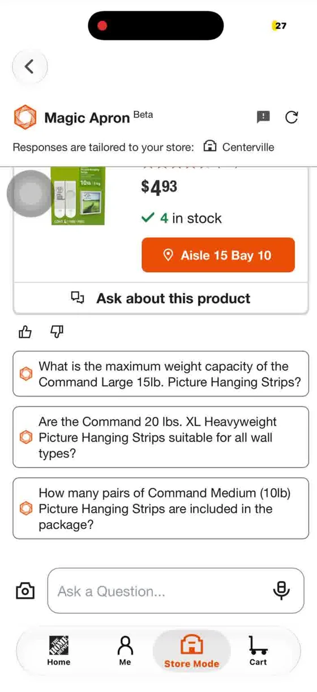
After: My redesign 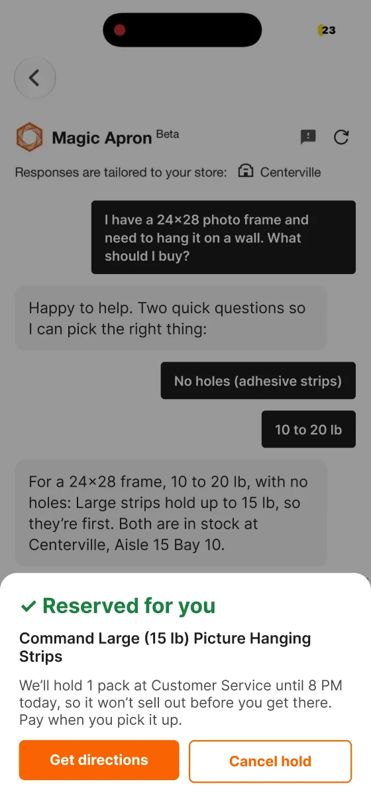
Change 4Low stock? Offer pickup today
When fewer than 5 are left, "Buy for pickup" opens a simple sheet with the photo, price and pickup place, and a "Not now" button.
UX principle
- User control and freedom. An option, not pressure.
Before: The app today After: My redesign 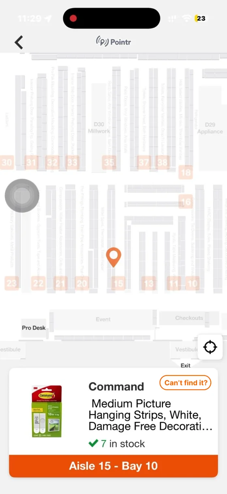
Change 5A visible "Can't find it?" button
A labeled button on the product card replaces the small three-dot menu.
UX principle
- Fitts's law. A labeled button beats a small icon target.
Before: The app today After: My redesign 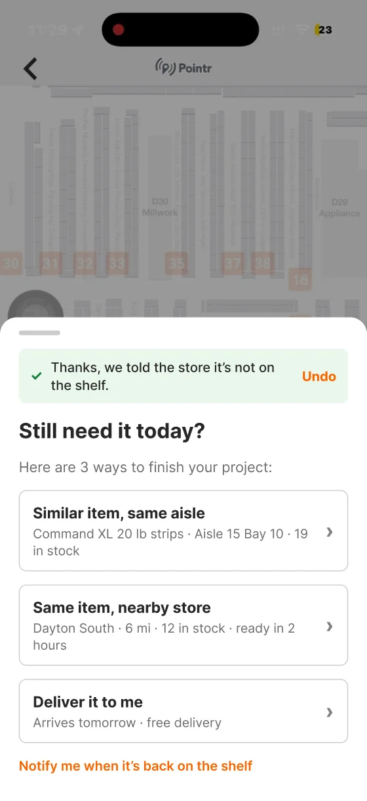
Change 6Report, then finish the task
After the thank-you, "Still need it today?" offers a similar item, a nearby store or delivery, with Undo.
UX principle
- Help users recover from errors. The task ends with a product, not a dead end.
How I'd measure it
These are hypotheses, not results. I'd watch:
- How often people ask again in the same chat
- How often people answer the questions or skip them
- Pickup orders on low-stock items
- "Can't find it" reports that still end in a purchase
Limits: one interview plus my own walkthroughs is a signal, not proof. Next, I'd test with 5 first-time DIYers, at home and in the store.
Did you like this case study?
Tell me what worked, or what you'd change. It comes straight to me.